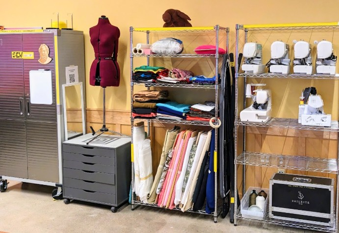

Sew whaaat?!
Sewing and textiles equipment training happens as requested by staff and/or community members. It is also the subject of some workshops. See workshops on the BTU Lab Calender.
See the BTU Mischief Maker page to contact one of our community experts for sewing tutorials.

Equipment & Supplies
Multi-stitch Sewing Machines
4-Thread Serger
Industrial Sewing Machines
Cutting Mats
Fabric Scissors and Knives
Pins and Needles
Iron and Ironing Board
Assortment of Fabrics
...and more!